Hello, my name is Fawwaz, Nice to meet you !
I studied Computer Science at Institut Teknologi Bandung in 2011 and
completed master degree from the same university in 2016. I have an
interest in Artificial Intelligence especially in Natural Language
Processing . My final year project on extracting event information
from Twitter account was supervised by
Dr. Masayu Leylia Khodra
and it was developed further to be my master thesis under
Dr. Eng. Ayu Purwarianti's
guidance. From mid 2015 to early 2016, I was a teaching assistant on
Machine Learning course in Graphic and
Artificial Intelligence Laboratory. I involved in expert-enriched News research from last 2015 to early
2016. I also helped UN global pulse Lab to construct a corpus for
translating english language into 6 local language by implementing
their crowdsourced translation tools.
Besides my academic activities, I also put a special interest on
Interaction Design. I learned Human Centered Design from
Labtek Indie and
applied Design Thinking principles for my several micro projects. I
also involved as a volunteer in
Design Action BDG,
an annual event held by Bandung Creative City forum to address some
thematic issues in Bandung.
My dream is building a creative makerspace in bandung for
inter-disciplinary background. In a nutshell, i am very interested in
Research and Development activities. You can read detailed information
about my experience below.
Portofolios
Artificial Intelligence
Key words : Artificial Intelligence, Machine Learning, Natural
Language Processing, Data Visualization, Open Data, Data Science, Data
Engineering.
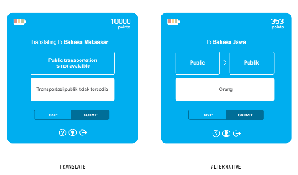
Translator Gator
Translator gator is a crowdsourced corpus building tools for
United Nations Global Pulse Lab to achieve Sustainable
Developement Goals. The tools collects english language
translation for 6 local language. The releases can be read in :
http://unglobalpulse.org/blog/translator-gator-language-game-research
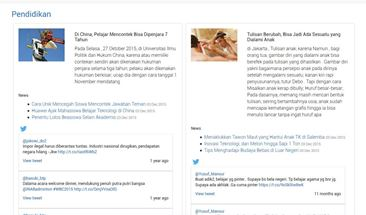
Expert-Enriched News Aggregator
This research is about augmenting news with expert information
from their social media account. Together with
Masayu Leylia Khodra,Yudi Wibisono, and Dyah Rahmawati we
built an Automatic Complementary Summarization system. The live
working system can be found in here :
http://128.199.104.249/
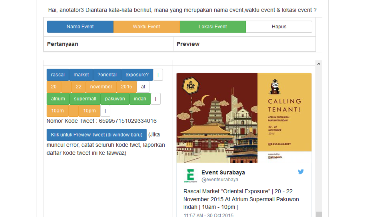
Automatic Event Extraction
Automatic Event Extraction is a system that extract event
information (event name, time and location) from several twitter
accounts without human intervention using Condtional Random Field.
It can be applied for event-related websites such as jktgo.com or
goersapp.com
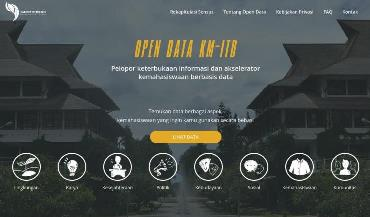
Open Data KM-ITB
Open Data KM-ITB (http://data.km.itb.ac.id) is a milestone for campus-based open data. Together with
Irfan Nasrullah,
Reza Irvanda,
Husni Munaya
and
Wahyu Muqsita
we build a transparent information about current situation in ITB.
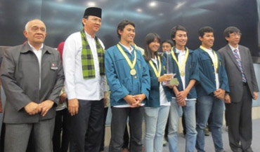
TEC (Toilet elektronik cerdas)
TEC is a project to change the behaviour of indonesian people
while using the public toilet. It uses Neural Network to adapt
with the environment. TEC also received an award from Dikti as
runner-up on GEMASTIK-7.Read more on
http://swa.co.id/corporate/social-innovation-competition-untuk-jakarta-yang-lebih-baik
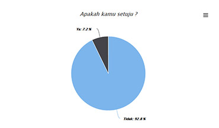
ITB Parking Data Visualization
This visualization shows the opinion of ITB students related to
parking services after new parking rate policies was applied in 1
Sept 2016. The detailed information about student's opinion can be
viewed in
http://fawwaz.github.io/ParkirITB
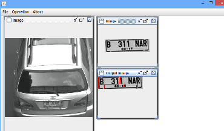
Simple Character Detector
Simple character Detector identify the edge of image
representation for car license plate. It uses naive approach to
detect its edge.
Software Development
Key words: Sofware Engineering, Software Development, Laravel,
AngularJS, Javascript, BootStrap, Firebase, Android.
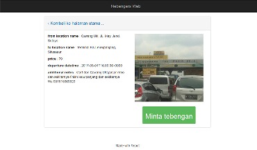
Unofficial Nebengers Web
Every week, whenever I want to go back to my home in Bandung, I
always use
Nebengers App. Because my phone battery draining fast, I thought it gonna
better for me to create Unofficial Nebengers Web App so I can
access it without using my phone. You can find my live Unofficial
Nebengers web app in :
http://web-nebengers.herokuapp.com. It is made using React.
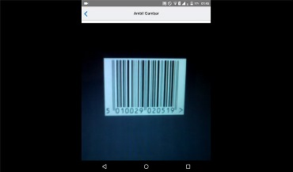
2 in 1 supermarket
Actually I made this app for helping Dian Anindya's final year
project. The app scan predefined barcode and it synchronize it's
data to supermarket server. The Idea is to built basketless
supermarket so the customer will feel Amazon-go-like experience.
You can watch fully working app in
https://www.youtube.com/watch?v=oKaru161QLA. It is made by React Native.
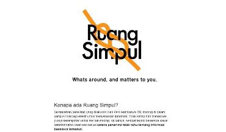
Ruang Simpul
Ruang simpul is a
prototype of a digital hub for student explaining actual campus
based event. Ruangsimpul brings insight about what happening right
now. This prototype is built using AngularJS.
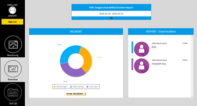
NFC-Based Security Guard Monitoring system
This project is about making a monitoring dashboard for Security
Officer to view real-time status of protected building. It
replaces older system which require every security guard to report
current status of the protected building manually. This system was
created together with Elian Daiva,
M Hanif Wicaksono and
Izzan Bacharudi Soedarsono using AngularJS and
Firebase.
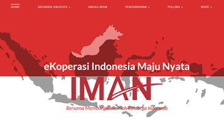
E-Koperasi Iman
E-Koperasi Iman is an Consumer cooperative dashboard to monitor
its member activities. It was developed together with
Krisna Fathurrahman,Teddy Maulana and
Izzan Bacharudin Soedarsono using Laravel.
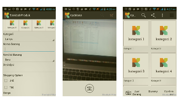
Kadriana App
Kadriana App(currently Prelo.id) is an woman-focused e-commerce to
sell secondhand product. The app was a protoype built over Native
Java code, developed together with Pandu Kartika Putra
Interaction Design
Key words: Interaction Design, Human Computer Interaction, Human
Centered Design, User Experience, Design Thinking.
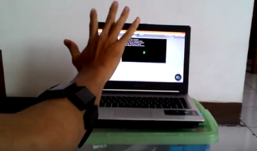
Box War
Box war is an interactive game using Myo ArmBand to detect player
movement. The gameplay works like cat vs dog game,but it uses
natural interaction. It means player can really throw something to
the other player and the game will sychronize with the hand
movement. This game was created together with Ted Kesgar,Reza Irvanda
, Dyah rahmawatiand Alifa Nurani Putri
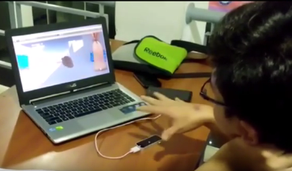
Trash Rush - Interactive Game
Trash rush is a game to educate children how to separate organic
and inorganic trash. It uses Leap Motion as controller so the
player can interact naturally. This game was created together with
Ted Kesgar,
Dyah Rahmawati and
Alifa Nurani Putri
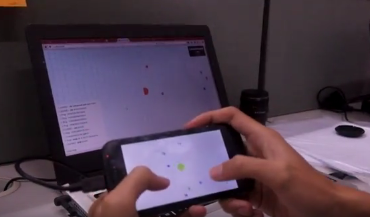
Sapa !
Sapa is integrated gaming platform in public place. It engages
interaction for people in public place, in response to the high
stress level among urban dweller and commuters in big cities. The
gamw was created together with Anindya Paramaarti using
libGdX Framework.
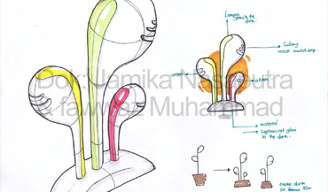
Alika
Alika is a system designed to build awareness on public space for
smoker. Alika is created to keep children safe from being a
passive smoker. Alika was created together with
Jamika Nasaputra
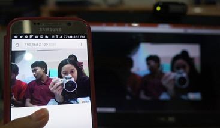
Cherri
Cherri is a smart baby crib integrated with monitoring system so
modern mom can keep in touch with theri babies while working. This
working prototype was developed as proof of concept together with
Winnie Andam Dewi using raspberry pi
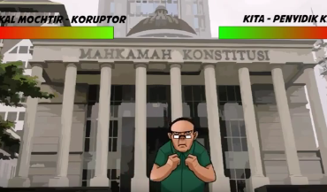
Corrupter (Concept)
Corrupter is Fighting game against popular Indonesian corruptor to
educate anti-corruption course for children. This game was sent
for Compfest 2014 and expected to use Intel Real Sense technology.
Unfortunately, due to customs issue, the game remains as a
concept.
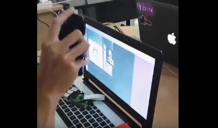
Augmented Reality-Based Audio guide
this project was designed to increase user experience in Museum
Konferensi Asia Afrika Bandung. It adds and audio explaining
relevant information once it scans certain signature in the
museum. This project was done together with
Muhammad Hanif Wicaksana using OpenFrameworks and Raspberry
Pi.
{kind=link}
{kind=link}
{kind=link}
{kind=link}
{kind=link}
{kind=link}
{kind=link}
{kind=link}
{kind=link}
{kind=link}
{kind=link}
{kind=link}
{kind=link}
{kind=link}
{kind=link}
{kind=link}
{kind=link}
{kind=link}
{kind=link}
{kind=link}